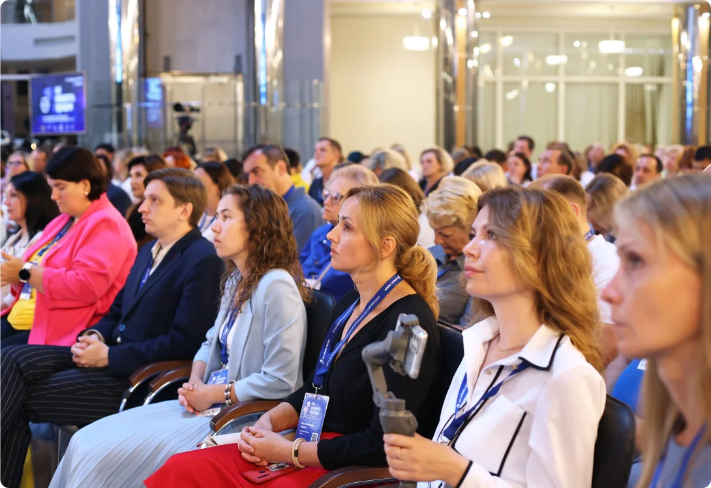
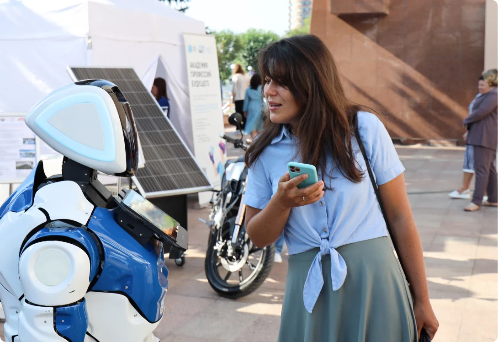
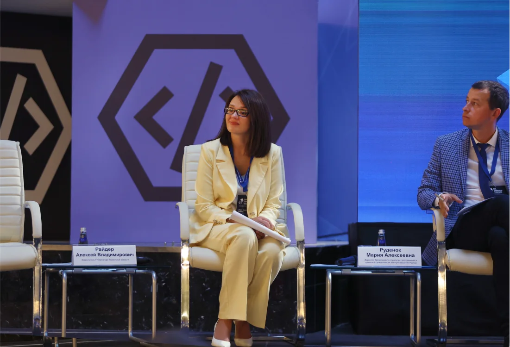
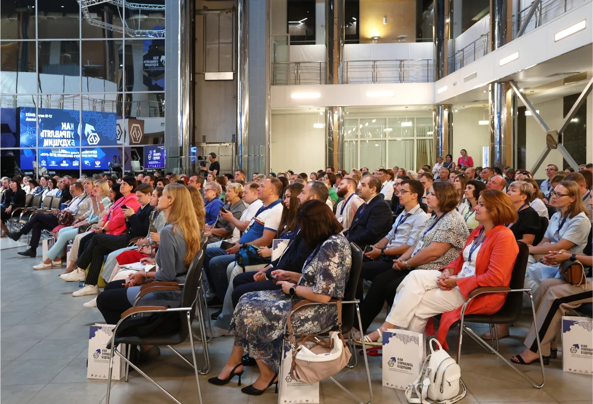
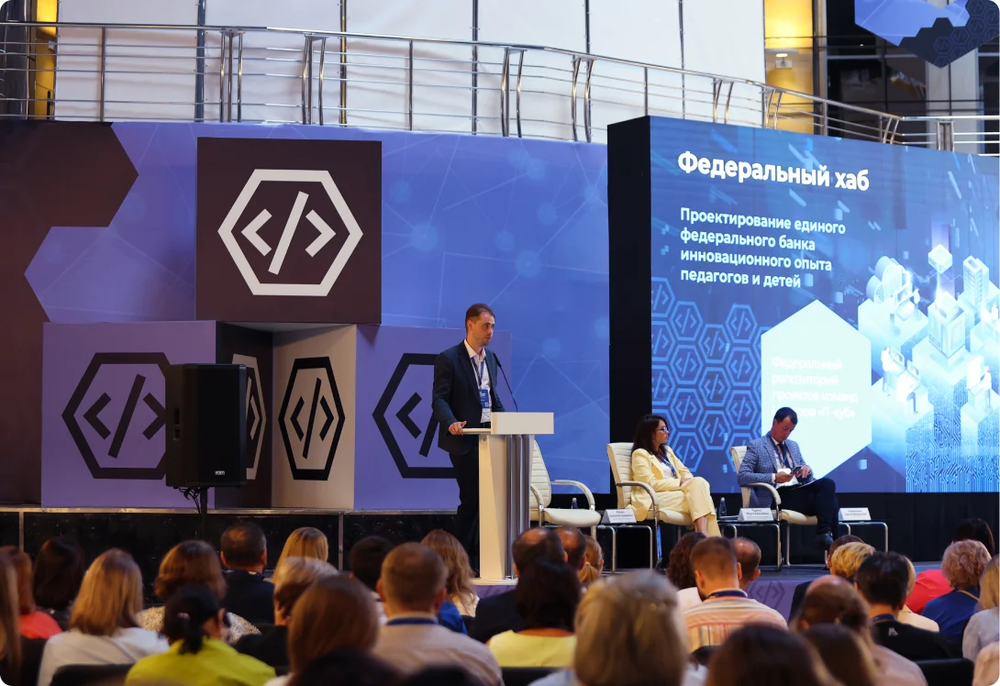

Центры цифрового образования
Программа мероприятий
17
августа
День 1
список выступлений
Торжественное открытие мероприятия, секция государственной образовательной политики
Обращение Министра просвещения Российской Федерации к руководителям Центров цифрового образования детей
Райдер Алексей Владимирович
заместитель Губернатора Тюменской области
Приветственное слово, обращение к руководителям Центров цифрового образования детей «IT-куб»
Кожевников Сергей Михайлович
директор ФГАНУ «ФИЦТО»
Центры «IT-куб» как драйвер в технологическом развитии регионов
Руденок Мария Алексеевна
директор Департамента стратегии, программной и проектной деятельности Минпросвещения России
Роль Центров «IT-куб» в экосистеме Национального проекта «Образование»
Сессия о современных инструментах и возможностях управления деятельностью Центров
«IT-куб»
и мерах, направленных на развитие ЦентровПроектная сессия, часть 1.
Направления развития и меры поддержки Центров «IT-куб»
Модератор: Кожевников Сергей Михайлович, директор ФГАНУ «ФИЦТО»
Пономарева Юлия Александровна
генеральный директор ФГАУ «Центр просветительских инициатив Министерства просвещения Российской Федерации»
3 столпа нацпроекта «Образование»: «IT-куб», Кванториум, Точка роста
Суханов Даниил Артемович
начальник Центра программной и проектной деятельности ФГАНУ «ФИЦТО»
Меры поддержки Центров «IT-куб» со стороны Федерального оператора в 2023 году
Вайно Александр Антонович
руководитель центра молодежных инициатив Агентства стратегических инициатив
Инфраструктура мер поддержки Агентства стратегических инициатив
Представление лучших региональных практик
Проектная сессия, часть 2.
Успешная деятельность образовательных организаций на примере лучших региональных практик
Модератор: Кожевников Сергей Михайлович, директор ФГАНУ «ФИЦТО»
Горковец Дина Николаевна
директор Департамента образования и науки Тюменской области
Развитие инженерного образования в Тюменской области
Косолапов Владимир Викторович
руководитель Центра «IT-куб», Нижегородская область
Ментор–сессии — как инструмент формирования единой экосистемы образования и развития образовательной инфраструктуры
Кешко Анна Александровна
Руководитель Центра «IT-куб», Чувашская Республика
Частно–государственное партнерство. Образование и бизнес на пути к технологическому суверенитету страны
Марейчева Лариса Ивановна
Руководитель Центра «IT-куб», Тульская область
Работа с детьми с ОВЗ при функционировании Центров «IT-куб». Специфика составления дополнительных образовательных программ технической направленности (для детей с ОВЗ)
Взаимодействие с технологическими партнерами
Проектная сессия, часть 3.
Взаимодействие Центров «IT-куб» с технологическими партнерами
Модератор: Суханов Даниил Артемович, начальник Центра программной и проектной деятельности ФГАНУ «ФИЦТО»
Горелова Анастасия Ивановна
руководитель комитета по информатизации АРПП «Отечественный софт», руководитель программ обучения «Хаб знаний МойОфис»
Начинаем образовательный процесс с использованием отечественных программных продуктов, на примере решений «МойОфис»
Лямин Александр Сергеевич
заместитель директора ФГАНУ «ФИЦТО»
Современные возможности и цифровые инструменты для организации и управления образовательной деятельностью в Центрах «IT-куб»
Шутенко Олег Владимирович
вице–президент корпорации «Синергия»
Экосистема непрерывного IT-образования: сад — школа — университет
Шмавонян Саркис Артушевич
менеджер по работе с образовательными организациями ООО «КИБЕРПРОТЕКТ»
Информационная безопасность детей: от концепции к реализации
Пикулев Александр Евгеньевич
руководитель образовательного направления Varwin
От обучения и хакатонов к реальной практике: как школьники и студенты участвовали в разработке проектов для реальных бизнес–заказчиков компании Varwin
Алексеев Игорь Владимирович
директор по развитию ООО «А-Реал Консалтинг»
Основные способы борьбы с киберугрозами в Российской Федерации
18
августа
День 2
список выступлений
Практико–ориентированная сессия для руководителей Центров
«IT-куб»
Практико–ориентированная сессия и деловая игра (проработка кейсов) для руководителей Центров «IT-куб» по группам (3 группы)
При участии модераторов:
Минасян Наталия Валерьевна, заместитель начальника Центра программной и проектной деятельности ФГАНУ «ФИЦТО»
Заика Софья Андреевна, руководитель проектов Центра программной и проектной деятельности ФГАНУ «ФИЦТО»
Король Анна Александровна, руководитель проектов Центра программной и проектной деятельности ФГАНУ «ФИЦТО»
Щелчкова Оксана Васильевна
руководитель Центра «IT-куб», Удмуртская Республика
IT-куб: Сотрудничество с сущностями Нацпроекта «Образование»
(Работа с «Точка роста», «Кванториум», «Дом научной коллаборации», проведение совместных мероприятий внутри региона, развитие сетевого взаимодействия)
Якубович Татьяна Валерьевна
руководитель Центра «IT-куб», Брянская область
IT-куб: Руководство организационно–педагогической деятельностью
(Разработка учебных программ, работа руководителя с коллективом)
Шефер Светлана Анатольевна
руководитель Центра «IT-куб», Алтайский край
IT-куб: Сотрудничество с технологическими партнерами
(Проведение охватных мероприятий в сотрудничестве с ООО «КИБЕРПРОТЕКТ»)
Кешко Анна Александровна
руководитель Центра «IT-куб», Чувашская Республика
Деловая игра. IT-куб: Управление кадрами
Подведение итогов
Проектная сессия,
Подведение итогов Всероссийского съезда руководителей Центров цифрового образования детей «IT-куб» «Как Управлять Будущим»
Модераторы:
Лямин Александр Сергеевич, заместитель директора ФГАНУ «ФИЦТО»
Суханов Даниил Артемович, начальник Центра программной и проектной деятельности ФГАНУ «ФИЦТО»
Смирнова Варвара Андреевна
руководитель Тинькофф образования
Опыт Тинькофф в образовательных проектах: зачем компании работать со школьниками и студентами
Ивашкевич Евгений Васильевич
ректор Центрального университета
Центральный университет: концепция университета нового поколения
Видеопрезентация
Центров«IT–куб»
Фотогалерея




